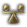

Localisation modding
Version
This article is for the PC version of Stellaris only.
Localisation refers to the actual text presented to the player in events, menus, weaponry, stories, and any other string of text in any window in the game. Localisation files are saved as .yml in the localisation/ folder and should be encoded with UTF-8 with BOM. The naming convention for .yml files is <file>_l_<language>.yml where <file> is the name given for this group of localisations, and <language> is the language the localisation is for. Supported languages currently include Portuguese (braz_por) English (english), French (french), German (german), Polish (polish), Russian (russian), Spanish (spanish), simplified Chinese (simp_chinese), Japanese (japanese) and Korean (korean).
Useful commands:
reload text – reloads localisation table. switchlanguage l_english – switches used language and reloads localisation table. toggle_string_id – displays StringIDinstead of localisation
Creating Localisation Files
- In the root mod folder (not in common), create a folder named "localisation" spelled with an s. Note, some other paradox titles may use the Americanized "localization" with a z.
- Optionally, create language subfolders within the "localisation" folder. This is organizationally helpful but not required.
- Stellaris’s localisation files are encoded as UTF-8-BOM. They must be encoded in UTF-8-BOM, as even UTF-8 will fail to be parsed by Stellaris, and will not work.
- The easiest way to get the correct encoding is to copy an existing Stellaris .yml file and modify it.
- Alternatively, simply create a standard text file and save it as .yml with UTF-8 with BOM encoding. Various text editors, such as Notepad++ and Visual Studio Code, will allow you to manually save with encoding UTF-8 with BOM
- The file name must end in "_l_<language>", otherwise it will not be read.
- The first line of any localisation file must be
l_<language>:, otherwise it will not be read. - Example file name:
mod_buildings_l_english.yml
Naming a YML file the same as a vanilla YML file will overwrite vanilla. Doing this is not recommended, unless you are trying to change (almost) all of the entries in the file. Localisation entries can be overwritten individually, by saving them in the "Replace" folder. See overwrite section.
Unfortunately there is no mod-friendly fallback language feature, so if localisation keys are missing, these keys are simply displayed as text. Therefore, it is practice to simply duplicate the English files for all other languages (changed with appropriate header).
File Encoding
- Open the YML file using a text editor. Editors such as Notepad++ and Visual Studio Code are recommended, however, if those aren't available, even standard Notepad will work.
- Convert the file to UTF-8 with BOM
- If using Notepad++, go to menu bar, open the Encoding menu.
- If using VSC, go to the bottom right corner and click on the encoding (
UTF-8by default), then click Save with Encoding. Alternatively, it is possible to modify the settings so YML files created using VSC have UTF-8 with BOM encoding by default. - If using Notepad, go to Save As…, then change the encoding and save the file.
- If the options listed are UTF-8 and UTF-8 with BOM (or similar), use UTF-8 with BOM.
- If the options listed are UTF-8 without BOM and UTF-8 (or similar), use UTF-8.
Localisation Keys
l_<language>:
localisation_key_1: "Text String 1"
localisation_key_2: "Text String 2"
Individual localisation entries are called keys and are placed before the colon. Keys are the actual code that points to the localised text. The text itself itself is called a string. The key is to the left of the colon. The string of text that will display in game is to the right of the colon, listed within two quotation marks (" "). The colon is the separator.
- The number seen in vanilla files right after the colon can be omitted, as it is only useful for Paradox’s internal translation tracking.[1]
- The file must contain
l_english:(or equivalent for other languages) before any localization keys. - Every entry after
l_english:(or equivalent) must begin with whitespace (a space or a tab works). - Each string to be displayed in game is encased in quotation marks. To display quotation marks in game, input a backslash before each quotation mark (for example:
text \"name\") - Note that the following unicode characters are invalid inside the localisation file and will generate a "?" instead:
„ “ ‚ ‘ – ” ’ … —
Overwriting Vanilla Text
To overwrite vanilla localisation keys (or keys from other mods), create a folder named "replace" inside your "localisation" folder. Localisation files in this folder will load after all other localisation files, and overwrite any duplicate keys. In this way it is not necessary to overwrite entire localisation files, as individual key entries will be overwritten by the last loaded file, LIOS (Last in, only served). It is possible to overwrite localisation without a "replace" folder, however this is not a reliable method.
Bracket Commands
Bracket commands (scoped localization statements) are enclosed in square brackets ([ ]), start with a primary scope, end with a text retrieval, and can have one or more secondary scopes in between. The fields are separated by periods (.). Text retrievals can be predefined (as per examples below), can mention Variables defined in the scope, or can be a scripted_loc (see common/scripted_loc/ files for examples). When writing "scripted_loc" entries, it’s important to note that these entries cannot themselves use bracket commands (i.e., a scripted_loc that includes [Root.GetName] will literally print [Root.GetName]).
Note: if you want to use loc commands e.g. log = [This.GetName] in a scripted effect or trigger, you have to write it \\[This.GetName] or it will bug out (at the latest the second time you use one in the effect).
In most cases, it is also possible to get the value of variables with '[Scope.my_variable]' and saved dates with '[Scope.my_date_flag]'.(since 3.1)
Two consecutive opening square brackets '[[' will escape it, making a single square bracket show up in text instead, i.e. '[[example]' in loc will display as '[example]' in-game.
There are also several unscoped commands: GetDate, GetMidGameDate, GetLateGameDate, GetYear, LastKilledCountryName.
Following list is only a part of hardcoded scoped localization commands (it also does not include any scripted locs). A more complete list of commands can be found at Stellaris\logs\script_documentation\localizations.log.
Primary Scopes
| Command | Example usage | Comments |
|---|---|---|
| Root | [Root.GetName] | The event’s root scope |
| This | [This.GetName] | The current scope |
| From | [From.From.GetName] | The calling event’s root scope. For events further back in the call stack, From can also be used as a secondary scope |
| Prev | [Prev.From.GetName] | The previous scope. It is not obvious to me what Prev.From points to, but some project descriptions use it |
| <event target tag> | [mytarget.GetName] | Event target tags are used without preceding them with event_target: in localisation
|
| Diplomatic Promotions | ||
| Actor | [Actor.GetAllianceName] | Used in diplomatic response messages. The faction initiating an action |
| Recipient | [Recipient.GetName] | Used in diplomatic response messages. The faction targeted by the action |
| Third_party | [Third_party.GetName] | Used in diplomatic response messages. A third party involved in the action |
Secondary Scopes
| Command | Example usage | Comments |
|---|---|---|
| Country Promotions: Capital Ruler Heir Species Federation | ||
| Capital | [Root.Capital.GetName] | The capital of the current country or sector |
| Leader | [Root.Leader.GetName] | The leader of the current scope (fleet, country, federation, pop faction, first contact, espionage operation, spy network, sector) |
| War Promotions | ||
| MainAttacker | [This.MainAttacker.GetAllianceName] | The main attacker of the current scope (must be used in a war scope), used in war name formats |
| MainDefender | [This.MainDefender.GetSpeciesName] | The main defender of the current scope (must be a war scope), used in war name formats |
| Planet Promotions: Owner System MoonOf Sector | ||
| Owner | [Root.Owner.GetName] | The current scope’s owner |
| System | [Root.System.GetName] | The system where the primary scope is located |
| Planet | [Root.Planet.GetName] | The planet where the current scope is located (pop, army, archaeological site, deposit, megastructure) |
Text Retrieval
| Command | Example usage | Comments |
|---|---|---|
| GetAAnPlanetClass | [Root.GetAAnPlanetClass] | "a" or "an", depending on which the letter the scoped planet’s class starts with |
| GetAAnSpeciesClass | [Root.owner_species.GetAAnSpeciesClass] | "a" or "an", depending on which the letter the scoped species’ class starts with |
| GetAdj | [Root.GetAdj] | The adjective associated with the current scope |
| GetAdjective | [Root.GetAdjective] | The adjective associated with the current scope |
| GetAllianceName | [This.MainAttacker.GetAllianceName] | The name of the alliance the current scope belongs to |
| GetControllerName | [Root.GetControllerName] | Name of the current controller (known to work on planets) |
| GetClassName | [Root.GetClassName] | Name of the current planet class |
| GetEngineer | [Owner.GetEngineer] | "engineer", "engineering drone", or "engineering unit", depending on whether the scoped empire is a normal empire, a Hive Mind, or a Machine Intelligence, respectively |
| GetEngineerPlural | [Owner.GetEngineerPlural] | "engineers", "engineering drones", or "engineering units", depending on whether the scoped empire is a normal empire, a Hive Mind, or a Machine Intelligence, respectively |
| GetFleetName | [Root.GetFleetName] | The name of the fleet associated with the current scope |
| GetHasHave | [Root.GetHasHave] | Either "has" or "have", depending on the gender (or lack thereof) of the scoped leader |
| GetHeirName | [Root.GetHeirName] | The name of the current heir |
| GetHeirTitle | [Root.GetHeirTitle] | The title of the current heir |
| GetHomeWorldName | [Root.GetHomeWorldName] | The name of the home world of the current scope |
| GetLeaderName | [Root.GetLeaderName] | The name of the leader associated with the current scope |
| GetLinguists | [Owner.GetLinguists] | "linguists", "language drones", or "linguistic algorithms", depending on whether the scoped empire is a normal empire, a Hive Mind, or a Machine Intelligence, respectively |
| GetName | [Root.GetName] | The name associated with the current scope |
| GetRealName | [Root.GetRealName] | Same as GetName, but doesn't care about identification. aka. "unidentified" |
| GetFirstName | [Root.GetFirstName] | The name first associated with the current scoped leader |
| GetSecondName | [Root.GetSecondName] | The second name associated with the current scoped leader |
| GetAge | [Root.GetAge] | The age of the scoped leader |
| GetNamePlural | [Root.GetNamePlural] | The plural name associated with the current scope (must be a species) |
| GetNebula | [Root.GetNebula] | (unknown) |
| GetOwnerName | [Root.GetOwnerName] | Name of the current owner |
| GetPersonalityName | [Root.GetPersonalityName] | Get the name of the current AI personality |
| GetPlanetHabitat | [Root.GetPlanetHabitat] | "planet", "moon", or "habitat" depending on whether the current scope is a planet, moon, or habitat |
| GetPlanetMoon | [Root.GetPlanetMoon] | "planet" or "moon" depending on whether the current scope is a planet or moon |
| GetPlanetMoonCap | [Root.GetPlanetMoonCap] | "Planet" or "Moon" depending on whether the current scope is a planet or moon |
| GetPopFactionName | [Root.GetPopFactionName] | The name of the currently scoped pop’s faction |
| GetRandomSpeciesSound | [Root.GetRandomSpeciesSound] | A sound chosen randomly from a list of sounds associated with current scope’s species |
| GetRegnalName | [Root.GetRegnalName] | The regnal name of the current scope |
| GetResearchers | [Owner.GetResearchers] | "researchers", "research drones", or "research subroutines", depending on whether the scoped empire is a normal empire, a Hive Mind, or a Machine Intelligence, respectively |
| GetRulerName | [Root.GetRulerName] | The name of the ruler associated with the current scope |
| GetRulerTitle | [Root.GetRulerTitle] | The title of the ruler associated with the current scope |
| GetScientist | [Owner.GetScientist] | "scientist", "science drone", or "science unit", depending on whether the scoped empire is a normal empire, a Hive Mind, or a Machine Intelligence, respectively |
| GetScientistPlural | [Owner.GetScientistPlural] | "scientists", "science drones", or "science units", depending on whether the scoped empire is a normal empire, a Hive Mind, or a Machine Intelligence, respectively |
| GetSpeciesAdj | [Root.GetSpeciesAdj] | The adjective for the species of the current scope |
| GetSpeciesClass | [Root.GetSpeciesClass] | The class to which the species of the current scope belongs |
| GetSpeciesClassPlural | [Root.GetSpeciesClassPlural] | The plural of the current scope’s species’ clas |
| GetSpeciesMouthName | [Root.GetSpeciesMouthName] | The word for the current scope’s species’ mouth |
| GetSpeciesName | [Root.GetSpeciesName] | The name of the current scope’s species |
| GetSpeciesNameCompliment | [From.GetSpeciesNameCompliment] | A compliment using the current scope’s species |
| GetSpeciesNameInsult | [From.From.GetSpeciesNameInsult] | An insult using the current scope’s species |
| GetSpeciesNamePlural | [This.GetSpeciesNamePlural] | The plural of current scope’s species’ name |
| GetSpeciesNamePluralCompliment | [Root.GetSpeciesNamePluralCompliment] | A compliment using the plural of the current scope’s species’ name |
| GetSpeciesNamePluralInsult | [From.GetSpeciesNamePluralInsult] | An insult using the plural of the current scope’s species’ name |
| GetSpeciesHandName | [From.GetSpeciesHandName] | The word for the current scope’s species’ hand |
| GetSpeciesMouthName | [From.GetSpeciesMouthName] | The word for the current scope’s species’ mouth |
| GetSpeciesOrganName | [From.GetSpeciesOrganName] | The word for the current scope’s species’ internal organ |
| GetSpeciesSpawnName | [Root.GetSpeciesSpawnName | The word for the children of the current scope’s species |
| GetSpeciesSpawnNamePlural | [Root.GetSpeciesSpawnNamePlural | The plural word for the children of the current scope’s species |
| GetStarName | [Root.Capital.GetStarName] | The name of the star where the current scope is located |
| GetIsAre | [Root.Leader.GetIsAre] | Either "is" or "are", depending on the gender (or lack thereof) of the scoped leader |
| GetHerHim | [admiral.GetHerHim] | Prints 'her' or 'him' based on the character’s gender. |
| GetSheHe | [abducted_leader.GetSheHe] | Prints 'she' or 'he' based on the character’s gender. |
| GetSheHeCap | [abducted_leader.GetSheHeCap] | Prints 'She' or 'He' based on the character’s gender. |
| GetHomeWorldName | [Root.GetHomeWorldName] | The home world name of the selected country |
| GetHerHis | [admiral.GetHerHis] | Prints 'her' or 'his’ based on the character’s gender. |
| GetHerHisCap | [admiral.GetHerHisCap] | Prints 'Her' or 'His’ based on the character’s gender. |
| LastKilledCountryName | [LastKilledCountryName] | Prints the name of the last killed country. |
| GetTerraformer | [Owner.GetTerraformer] | "terraforming specialist", "terraforming drone", or "terraforming unit", depending on whether the scoped empire is a normal empire, a Hive Mind, or a Machine Intelligence, respectively |
| GetTerraformerPlural | [Owner.GetTerraformerPlural] | "terraforming specialists", "terraforming drones", or "terraforming units", depending on whether the scoped empire is a normal empire, a Hive Mind, or a Machine Intelligence, respectively |
| GetWasWere | [Root.Leader.GetWasWere] | Either "was" or "were", depending on the gender (or lack thereof) of the scoped leader |
- Added localization commands with Patch 3.1.
GetSpeciesFossilName GetSpeciesFossilNamePlural GetSpeciesRemnantName GetSpeciesRemnantNamePlural Species GetFossilName GetFossilNamePlural GetRemnantName GetRemnantNamePlural
Color Codes
{kind=link}
Color codes start with § (Windows users Keypad shortcut: ALT+0167), which is followed by a single character specifying the color to be used until another color code is detected, or the end of the string: §!. Within a $ command, the color for a displayed variable (not string definition, s. below $ Codes) may also be specified by preceding the closing $ with | and the color code character: $AGE|Y$
It is also possible to change the text color in game by adding a DC1 UTF-8 character to a color code letter. Please note that doing so may unintentionally color subsequent text if the color is not changed to default at the end.
§RR§Sa§Hi§Yn§Gb§Bo§Mw§! will be displayed as:Rainbow
| Code | Color | Vanilla Use |
|---|---|---|
| W | ⬛ White | Diplomatic Attitudes |
| T | ⬛ Light Grey | Standard color of all text |
| g | ⬛ Dark Grey | Disabled / inactive |
| L | ⬛ Brown / Kaki | Lore, back story, role playing elements |
| P | ⬛ Light Dirty Pink | Highlighting of Aggressive text in descriptions and event text |
| R | ⬛ Red | Negative modifiers |
| S | ⬛ Dark Orange | Subtle highlighted text |
| H / K | ⬛ Mango / Orange | Highlighted text |
| Y / I | ⬛ Yellow | Sub-optimal or Neutral modifiers |
| G | ⬛ Green | Positive modifiers |
| V | ⬛ Dark Green | Event text |
| E | ⬛ Teal | Large chunks of text |
| C | ⬛ Cyan | Concept text that generates another tooltip |
| B | ⬛ Cyan-Blue | Event effects that affect pops |
| M | ⬛ Purple | Rare technologies |
| _ | ⬛ Magenta | Placeholders |
| c | ⬛ Blue-Green | Leader trait |
| v | ⬛ Faded Green | Veteran leader trait |
| d | ⬛ Tan | Destiny trait |
| r | ⬛ Light Purple | Renowned |
| l | ⬛ Light Green | Legendary |
| ! | Default | Return to color before last color change |
(Defined in file: Stellaris/interface/fonts.gfx)
$ Codes
$ is used to delimit strings (or variables) defined elsewhere to be expanded in the current string, or system statistics in GUI elements.
@cyborg_energy_upkeep= 5
"Upkeep by +$@cyborg_energy_upkeep$"
Number Formatting
The | character can also be used to format numbers. $VALUE|*x$ will format VALUE to x decimal places.
# EXAMPLE = 100
"$EXAMPLE|*0$" # 10044
"$EXAMPLE|*1$" # 100.0
£ Codes
£ codes are used for the names of various system stats, including energy, minerals, influence, and the three research categories (engineering, physics and society.) More exist than those listed here, such as £ship_stats_hitpoints\armor\shield£, £fleet_template_size£, and £trigger_yes\no£ among others. Search the '£' character using something like Notepad++'s Find in Files feature to find something specific. Remember that £ codes must surround the tag you're inserting, i.e. £energy£. (Windows users without the pound symbol on their keyboards can use Alt + 0163.)
It also supports the multiple frames (if the source sprite has them), i.e.: £leader_skill|3£ will render an icon of chosen skill level.
| Code | Picture |
|---|---|
| £energy£ | |
| £minerals£ | |
| £food£ | |
| £influence£ | |
| £stability£ |  |
| £unity£ | |
| £alloys£ | |
| £trade_value£ | |
| £physics£ | |
| £society£ | |
| £engineering£ | |
| £pops£ | |
| £happiness£ | |
| £opinion£ | |
| £empire£ | |
| £military_ship£ | |
| £military_power£ | |
| £blocker£ | |
| £time£ | |
| £planetsize£ |
{kind=link}
{kind=link}
{kind=link}
{kind=link}
£ Custom Icons
You can create custom text icons to appear in game exactly like those above, by saving an icon in <root>/gfx/interface/icons/text_icons. Standard text icons are 16x16 pixel .dds files. In order to reference your icon in text, you will need to define it in the same way you define event pictures. Save a text file as .gfx in <root>/interface/ Define any custom modifiers as shown below:
spriteTypes = {
spriteType = {
name = "GFX_text_worker_produces_mult"
texturefile = "gfx/interface/icons/text_icons/mod_planet_jobs_worker_produces_mult.dds"
}
You can link multiple icons by making separate spriteType = blocks. All of these should be within one larger spriteTypes = (with an s) block.
The name must be prefixed GFX_text_. However, to reference this custom icon in localisation, use £worker_produces_mult£ (without the prefix) and it will appear alongside in game text.
Slash-Based Codes
The two slash-based codes available are \n and \t.
\n is the equivalent of pressing the Enter key and starting a new line, unless it is inside one of the above codes.
\t places a tab.
Backslashes can also be used to treat special characters as text characters, for example \" will make the string contain a quotation mark, instead of closing it off.
Style Guide
Vanilla events, modifiers and all other type of localization follows punctuation and capitalization guidelines. The following table highlights some of the rules employed in the vanilla English localization, allowing custom content to blend in more seamlessly. The table is by no means comprehensive, but instead should serve as a quick cheat-sheet for the most common type of strings. The number given for Character Limit is not a hard limit. Depending on the location, exceeding the limit might cause the text to be cut off, completely break the UI, or just look ugly and out of place.
| Location | Capitalization | Punctuation | Character Limit | Example |
|---|---|---|---|---|
| Event Names | Title Case | None | 50 | "Exotic Woodwind" |
| Event Descriptions | Sentence case | Standard | 2000 | "Music has taken many forms among the beings we have encountered since leaving [Root.GetHomeWorldName], and the methods and preferences continue to baffle us. Sometimes alien […] Whatever this instrument is, it’s unlike any of our own." |
| Event Options | Sentence case | Terminal punctuation | 70 | "An excellent time to learn more about their culture.", "Let us be careful and study this instrument.", "The colony is part of our future. It stays." |
| Names for Traits/Modifiers/Buildings/Ethics/etc. | Title Case | None | 30 | "Building Cost", "Massive Crater", "Very Strong" |
| Description for Traits/Modifiers/Buildings/Ethics/etc. | Sentence case | Standard | 200 | "The impact site of the meteorite which brought Lithoids to this planet.", "Members of this species possess a strength that almost defies the laws of physics." |
| UI Buttons | Sentence case / Title Case | None | Depends on UI | "Withdraw" |
| UI Alerts | Title Case | None | Depends on UI | "Relic Activation Available" |
References
| Empire | Empire • Ethics • Governments • Civics • Origins • Mandates • Agendas • Traditions • Ascension perks • Edicts • Policies • Relics • Technologies • Custom empires |
| Pops | Jobs • Factions |
| Leaders | Leaders • Leader traits |
| Species | Species • Species traits |
| Planets | Planets • Planetary feature • Orbital deposit • Buildings • Districts • Planetary decisions |
| Systems | Systems • Starbases • Megastructures • Bypasses • Map |
| Fleets | Fleets • Ships • Components |
| Land warfare | Armies • Bombardment stance |
| Diplomacy | Diplomacy • Federations • Galactic community • Opinion modifiers • Casus Belli • War goals |
| Events | Events • Anomalies • Special projects • Archaeological sites |
| Gameplay | Gameplay • Defines • Resources • Economy • Game start |
| Dynamic modding | Dynamic modding • Effects • Conditions • Scopes • Modifiers • Variables • AI • On actions |
| Media/localisation | Maya exporter • Fonts • Portraits • Flags • Event pictures • Interface • Icons • Music • Localisation |
| Other | Console commands • Save-game editing • Steam Workshop • Modding tutorial |